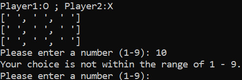
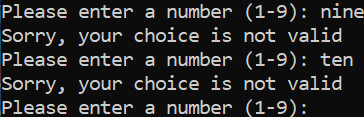
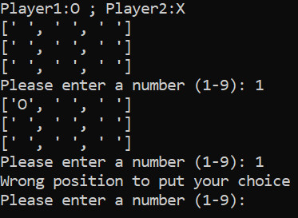
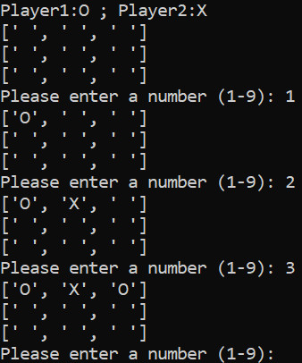
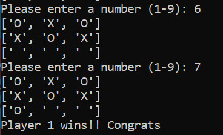
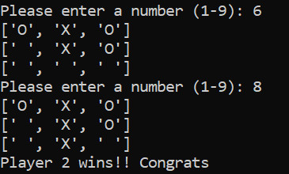
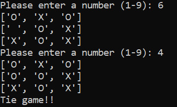

Python小作品 Tic Tac Toe Game
說明:
這個小作品為上Udemy課程中其中一堂課做的小作品，為圈圈叉叉小遊戲，這個程式主要分成六個function，一為產生表格，二為玩家輸入選擇，三為產生圈或是叉的符號，四為更表格，五為檢查 輸或贏，六為啟動遊戲
GitHub作品連結
https://github.com/WilliamTsai1227/Tic_Tac_Toe_Game.git
運作結果：
1.若玩家輸入不為數字，超過1~9的範圍及重複輸入已經被選取的位置時，會出現錯誤提醒訊息



2.玩家1與玩家2交互輸入O與X

3.若出現O先連為一條線時，會顯示Player 1 wins!! Congrats ;若出現X先連為一條線時，會顯示Player 2 wins!! Congrats ;若和局會出現Tie game!!
  